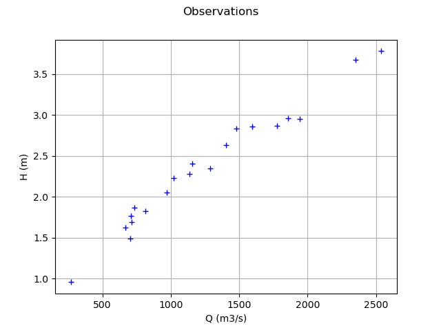
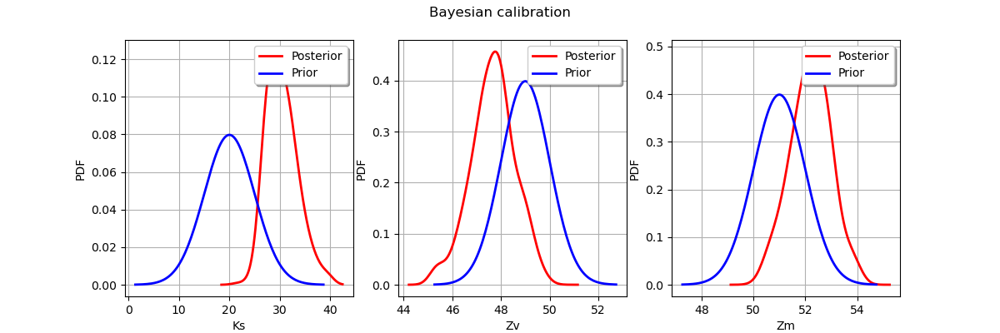

Note
Go to the end to download the full example code
Bayesian calibration of the flooding model¶
Abstract¶
The goal of this example is to present the Bayesian calibration of the flooding model.
Parameters to calibrate¶
The vector of parameters to calibrate is:

The variables to calibrate are  and are set to the following values:
and are set to the following values:
![K_s = 30, \qquad Z_v = 50, \qquad Z_m = 55.]()
Observations¶
In this section, we describe the statistical model associated with the  observations.
The errors of the water heights are associated with a gaussian distribution with a zero mean and a standard variation equal to:
observations.
The errors of the water heights are associated with a gaussian distribution with a zero mean and a standard variation equal to:

Therefore, the observed water heights are:
![H_i = G(Q_i,K_s,Z_v,Z_m) + \epsilon_i]()
for  where
where

and we make the hypothesis that the observation errors are independent. We consider a sample size equal to:

The observations are the couples  ,
i.e. each observation is a couple made of the flowrate and the corresponding river height.
,
i.e. each observation is a couple made of the flowrate and the corresponding river height.
Variables¶
 : Input. Observed.
: Input. Observed. ,
,  ,
,  : Input. Calibrated.
: Input. Calibrated. : Output. Observed.
: Output. Observed.
Analysis¶
In the description of the flooding model, we see that only one parameter can be identified. Hence, calibrating this model requires some regularization. In this example, we use Bayesian methods as a way to regularize the model.
Generate the observations¶
import pylab as pl
from openturns.usecases import flood_model
import openturns.viewer as viewer
import numpy as np
import openturns as ot
ot.Log.Show(ot.Log.NONE)
A basic implementation of the probabilistic model is available in the usecases module :
fm = flood_model.FloodModel()
We define the model  which has 4 inputs and one output H.
which has 4 inputs and one output H.
The nonlinear least squares does not take into account for bounds in the parameters. Therefore, we ensure that the output is computed whatever the inputs. The model fails into two situations:
if
 ,
,if
 .
.
In these cases, we return an infinite number.
def functionFlooding(X):
L = 5.0e3
B = 300.0
Q, K_s, Z_v, Z_m = X
alpha = (Z_m - Z_v) / L
if alpha < 0.0 or K_s <= 0.0:
H = np.inf
else:
H = (Q / (K_s * B * np.sqrt(alpha))) ** (3.0 / 5.0)
return [H]
g = ot.PythonFunction(4, 1, functionFlooding)
g = ot.MemoizeFunction(g)
g.setOutputDescription(["H (m)"])
We load the input distribution for .
Q = fm.Q
Set the parameters to be calibrated.
K_s = ot.Dirac(30.0)
Z_v = ot.Dirac(50.0)
Z_m = ot.Dirac(55.0)
K_s.setDescription(["Ks (m^(1/3)/s)"])
Z_v.setDescription(["Zv (m)"])
Z_m.setDescription(["Zm (m)"])
We create the joint input distribution.
inputRandomVector = ot.ComposedDistribution([Q, K_s, Z_v, Z_m])
Create a Monte-Carlo sample of the output .
nbobs = 20
inputSample = inputRandomVector.getSample(nbobs)
outputH = g(inputSample)
Generate the observation noise and add it to the output of the model.
sigmaObservationNoiseH = 0.1 # (m)
noiseH = ot.Normal(0.0, sigmaObservationNoiseH)
ot.RandomGenerator.SetSeed(0)
sampleNoiseH = noiseH.getSample(nbobs)
Hobs = outputH + sampleNoiseH
Plot the Y observations versus the X observations.
Qobs = inputSample[:, 0]
graph = ot.Graph("Observations", "Q (m3/s)", "H (m)", True)
cloud = ot.Cloud(Qobs, Hobs)
graph.add(cloud)
view = viewer.View(graph)

Setting the calibration parameters¶
Define the parametric model  that associates each observation
and value of the parameters
that associates each observation
and value of the parameters  to the parameters of the distribution of the corresponding observation:
here
to the parameters of the distribution of the corresponding observation:
here  with
with ![\mu = G(Q, K_s, Z_v, Z_m)]() and
and  .
.
def fullModelPy(X):
Q, K_s, Z_v, Z_m = X
mu = g(X)[0]
sigma = 0.5 # (m^2) The standard deviation of the observation error.
return [mu, sigma]
fullModel = ot.PythonFunction(4, 2, fullModelPy)
linkFunction = ot.ParametricFunction(fullModel, [0], [np.nan])
print(linkFunction)
ParametricEvaluation(class=PythonEvaluation name=OpenTURNSPythonFunction, parameters positions=[0], parameters=[x0 : nan], input positions=[1,2,3])
Define the value of the reference values of the  parameter.
In the Bayesian framework, this is called the mean of the prior Gaussian distribution. In the data assimilation framework, this is called the background.
parameter.
In the Bayesian framework, this is called the mean of the prior Gaussian distribution. In the data assimilation framework, this is called the background.
KsInitial = 20.0
ZvInitial = 49.0
ZmInitial = 51.0
parameterPriorMean = [KsInitial, ZvInitial, ZmInitial]
paramDim = len(parameterPriorMean)
Define the covariance matrix of the parameters to calibrate.
sigmaKs = 5.0
sigmaZv = 1.0
sigmaZm = 1.0
parameterPriorCovariance = ot.CovarianceMatrix(paramDim)
parameterPriorCovariance[0, 0] = sigmaKs ** 2
parameterPriorCovariance[1, 1] = sigmaZv ** 2
parameterPriorCovariance[2, 2] = sigmaZm ** 2
Define the prior distribution  of the parameter
of the parameter
prior = ot.Normal(parameterPriorMean, parameterPriorCovariance)
prior.setDescription(["Ks", "Zv", "Zm"])
Define the distribution of observations  conditional on model predictions.
conditional on model predictions.
Note that its parameter dimension is the one of  , so the model must be adjusted accordingly.
In other words, the input argument of the setParameter method of the conditional distribution must be equal to the dimension of the output of the model.
Hence, we do not have to set the actual parameters: only the type of distribution is used.
, so the model must be adjusted accordingly.
In other words, the input argument of the setParameter method of the conditional distribution must be equal to the dimension of the output of the model.
Hence, we do not have to set the actual parameters: only the type of distribution is used.
conditional = ot.Normal()
The proposed steps for and
will all follow uniform distributions,
but with different supports.
proposal = [ot.Uniform(-5.0, 5.0), ot.Uniform(-1.0, 1.0), ot.Uniform(-1.0, 1.0)]
Build a Gibbs sampler¶
initialState = parameterPriorMean
mh_coll = [
ot.RandomWalkMetropolisHastings(prior, initialState, proposal[i], [i])
for i in range(paramDim)
]
for mh in mh_coll:
mh.setLikelihood(conditional, Hobs, linkFunction, Qobs)
sampler = ot.Gibbs(mh_coll)
Generate a sample from the posterior distribution of .
sampleSize = 1000
sample = sampler.getSample(sampleSize)
Look at the acceptance rates of the random walk Metropolis-Hastings samplers.
[mh.getAcceptanceRate() for mh in sampler.getMetropolisHastingsCollection()]
[0.365, 0.359, 0.333]
Build the distribution of the posterior by kernel smoothing.
kernel = ot.KernelSmoothing()
posterior = kernel.build(sample)
Display prior vs posterior for each parameter.
fig = pl.figure(figsize=(12, 4))
for parameter_index in range(paramDim):
graph = posterior.getMarginal(parameter_index).drawPDF()
priorGraph = prior.getMarginal(parameter_index).drawPDF()
priorGraph.setColors(["blue"])
graph.add(priorGraph)
graph.setLegends(["Posterior", "Prior"])
ax = fig.add_subplot(1, paramDim, parameter_index + 1)
_ = ot.viewer.View(graph, figure=fig, axes=[ax])
_ = fig.suptitle("Bayesian calibration")
